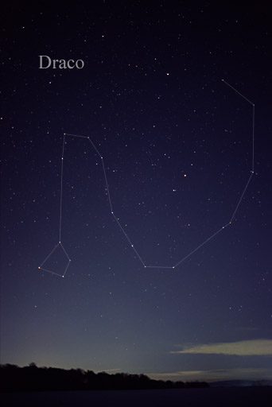

I always had a hard time finding it in the sky because it is
a lot fainter than, say, the big dipper or Cassiopeia.
But once
I realized that what I was looking for was a coiling line of stars
around polaris, it became easier to find.
To the ancients, it may have looked something like:

To you and me, it will look more like:
